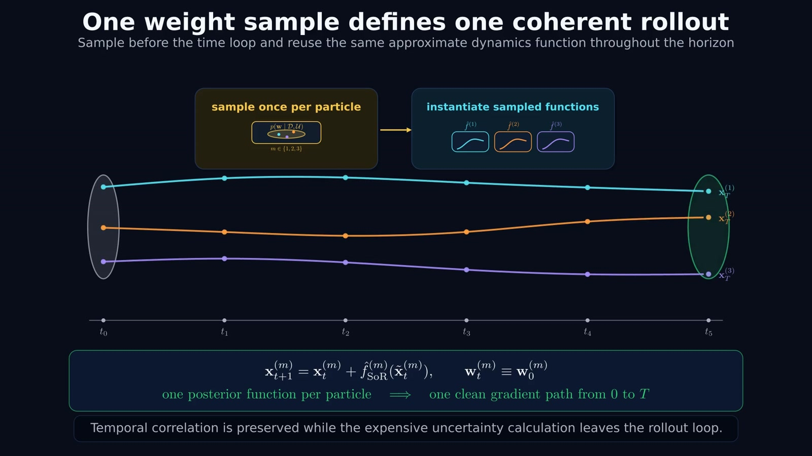
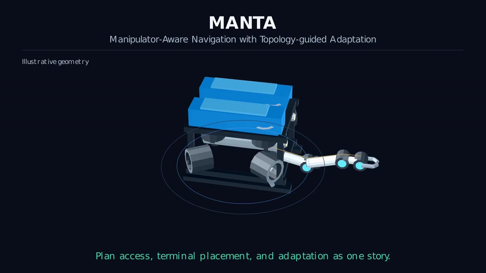
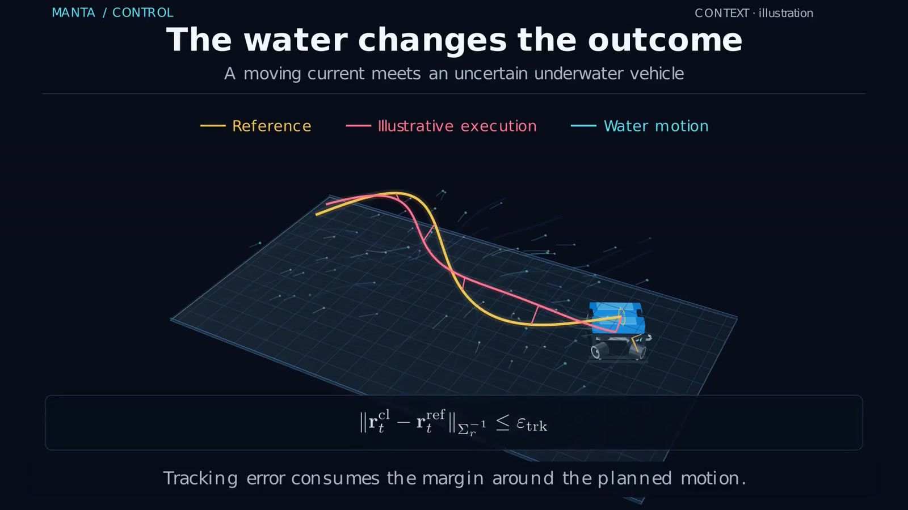
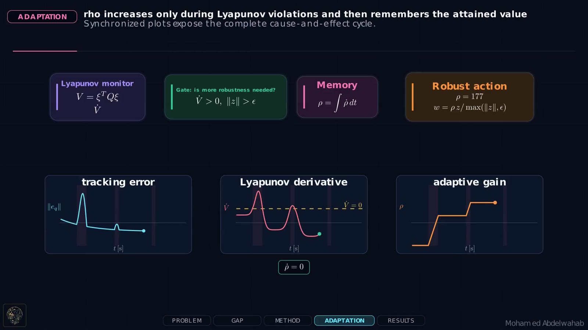
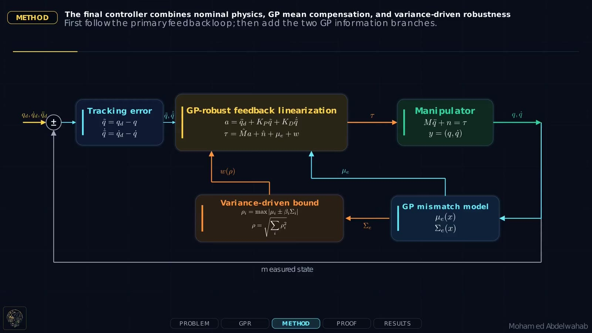

Robot Learning
Data-efficient policy learning using Gaussian Process dynamics, approximate rollouts, and uncertainty propagation.
I develop data-efficient robot learning, task-aware motion planning, and feedback control for manipulators and underwater robots. My work connects feasible plans with accurate execution under uncertain dynamics.
I hold a Master's degree in Control Systems Engineering and I am a PhD researcher in Autonomous Systems at the University of Padova and a visiting researcher at the Norwegian University of Science and Technology (NTNU). My work combines robot learning, nonlinear and robust control, motion planning, and marine robotics.
I develop sample-efficient Gaussian-Process-based model-based reinforcement learning methods, adaptive feedback-linearization controllers for unknown dynamics, and manipulation-aware planning and control for underwater vehicle–manipulator systems. I evaluate these methods across simulation benchmarks and robotic platforms, including a 7-DoF Franka Emika Panda, BlueROV and USV scenarios, and autonomous-driving systems.
Data-efficient policy learning using Gaussian Process dynamics, approximate rollouts, and uncertainty propagation.
Feedback linearization, Lyapunov analysis, adaptive gains, and tracking under unknown model mismatch.
Topology-aware global search and manipulation-aware trajectory refinement under collision and feasibility constraints.
Planning, station keeping, and trajectory tracking for surface and underwater vehicle–manipulator systems.
P-MC-PILCO makes policy learning more efficient. MANTA Planning finds feasible vehicle–arm motion. MANTA Control learns how to track it. Explore the videos, illustrated methods, and experimental evidence.

Make GP-based policy optimization more efficient by sampling one compact dynamics function per particle and reusing it throughout the rollout.
Linear rollout evaluation in the inducing-set size · real Panda tracking
Explore the project →
Choose a passage, coordinate the vehicle and arm, and repair the final approach so the underwater robot arrives ready to manipulate.
92.5% task success across 120 matched planning queries
Explore the project →
Learn uncertain underwater dynamics from interaction, then optimize an eight-thruster policy to track planned references with few learning trials.
Lower position RMSE than PD on 40/40 unseen references in simulation
Explore the project →
An adaptive robust correction compensates for unknown manipulator model mismatch without requiring a known analytical uncertainty bound.
Read project →
Gaussian Process residual models and predictive uncertainty support robust trajectory tracking under unknown robot dynamics.
Read project →Department of Engineering Cybernetics, Trondheim, Norway
Autonomous Systems, Padova, Italy
University of Padova